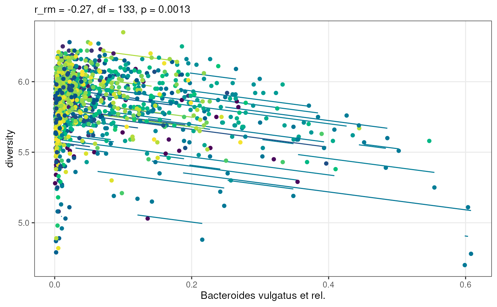
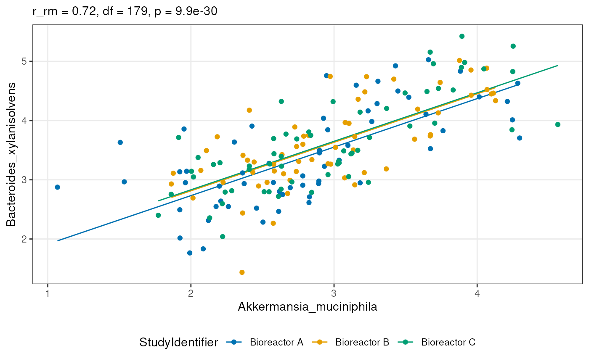

Plot the repeated-measures correlation of two variables
Source:R/AllGenerics.R, R/plotRmcorr.R, R/zzz-mae.R
plotRmcorr.RdplotRmcorr() draws two variables of the same samples against each
other, coloured by subject, with one fitted line per subject. The lines
share the common within-subject slope, and the subtitle gives the
repeated-measures correlation.
Usage
plotRmcorr(x, ...)
# S4 method for class 'SummarizedExperiment'
plotRmcorr(x, x.var, y.var, group, assay.type = "counts", ...)
# S4 method for class 'MultiAssayExperiment'
plotRmcorr(x, ..., experiment = 1L)Arguments
- x
a
SummarizedExperimentobject.- ...
additional arguments passed to
geom_point.- x.var, y.var
Character scalar. Variables on the x and y axes: a column ofcolData(x), a feature ofassay.type, or"<dimred>:<component>".- group
Character scalar. Specifies the column fromcolData(x)that identifies subjects.- assay.type
Character scalar. Specifies the assay that holds features named inx.varory.var. (Default:"counts")- experiment
Character scalarorinteger scalar. For aMultiAssayExperiment, the experiment to plot; its samples get thecolDataofx. (Default:1L)
Details
The repeated-measures correlation of Bakdash and Marusich (2017,
doi:10.3389/fpsyg.2017.00456) is the association of the two variables
within subjects. It comes from the analysis of covariance
lm(y.var ~ group + x.var):
\(r_{rm} = \pm\sqrt{SS_x / (SS_x + SS_{error})}\), with the sign of
the common slope, and its p-value from the F test of x.var with
\(L - N - 1\) error degrees of freedom, for \(L\) samples of
\(N\) subjects. This equals the Pearson correlation of the two
variables after centring each on its subject means. Each line passes
through its subject's means and spans the subject's values of
x.var. Samples with a missing value are dropped.
The test treats the samples of a subject as independent given the subject, so serial correlation in densely sampled time series makes the p-value too small. Zhou et al. (2019, doi:10.1038/s41586-019-1236-x, Fig. 5b) use the plot to relate host and microbial measures within participants. The colour legend is shown for up to six subjects; with more, the colours cannot identify subjects and the legend is dropped.
References
Bakdash JZ, Marusich LR (2017). Repeated measures correlation. Frontiers in Psychology 8:456.
Examples
# Diversity against the relative abundance of a genus within subjects
data("hitchip1006", package = "miaTime")
tse <- hitchip1006
# Some profiles are stored twice; keep the first copy
tse <- tse[, !duplicated(t(SummarizedExperiment::assay(tse, "counts")))]
tse <- mia::transformAssay(tse, method = "relabundance")
plotRmcorr(tse, x.var = "Bacteroides vulgatus et rel.",
y.var = "diversity", group = "subject", assay.type = "relabundance")

# Two species within three bioreactors
data("minimalgut", package = "miaTime")
tse <- mia::transformAssay(minimalgut, method = "clr", pseudocount = 1)
plotRmcorr(tse, x.var = rownames(tse)[1L], y.var = rownames(tse)[2L],
group = "StudyIdentifier", assay.type = "clr")
